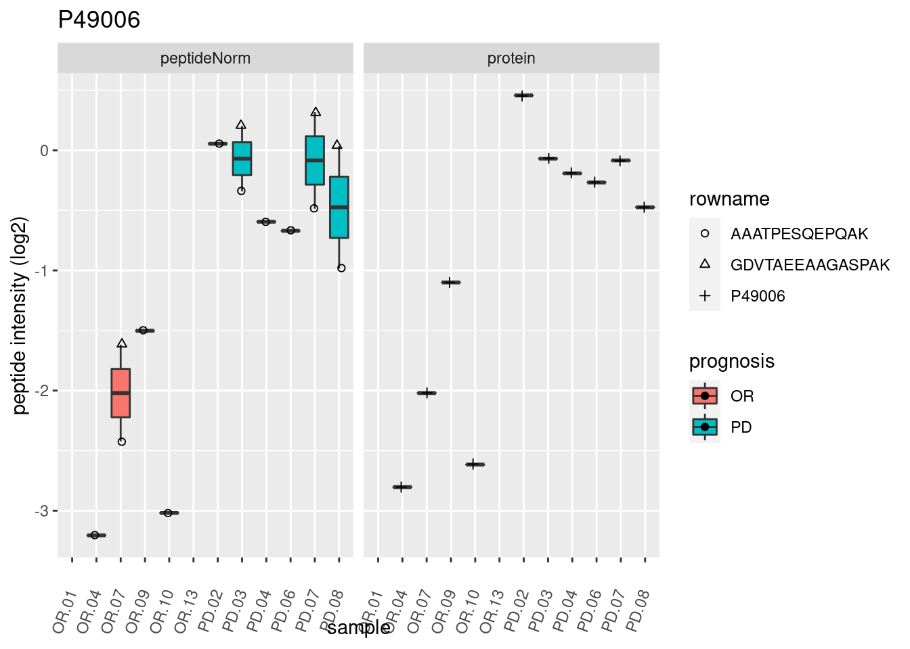
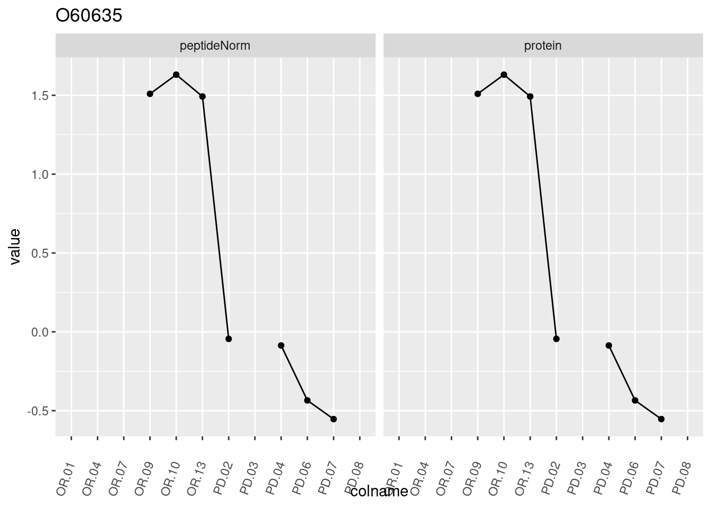
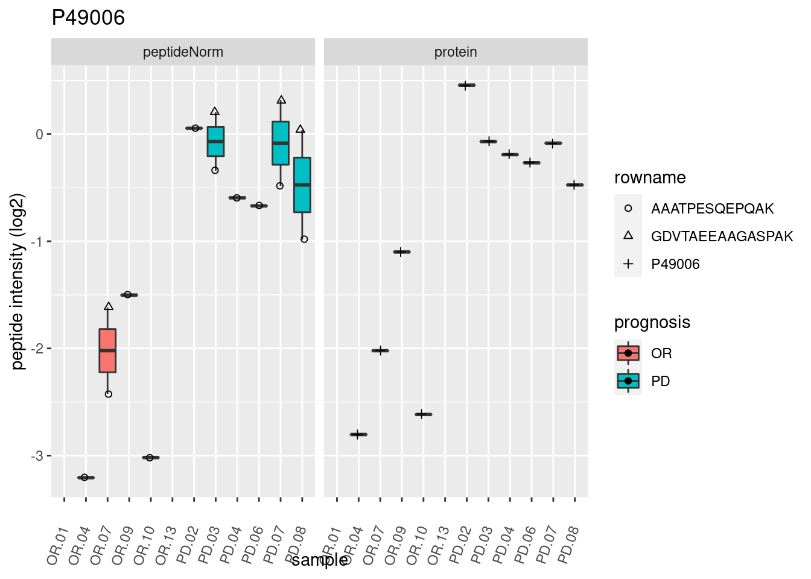
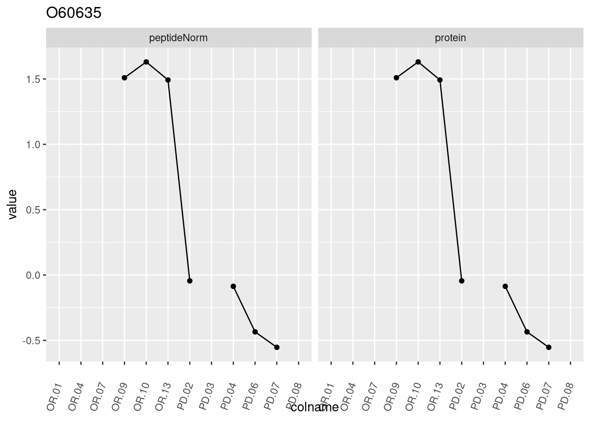
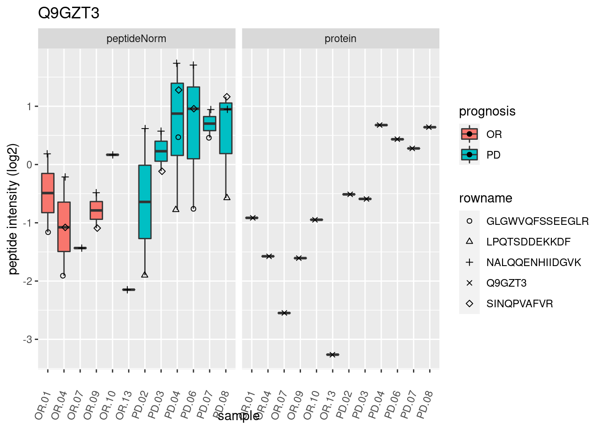
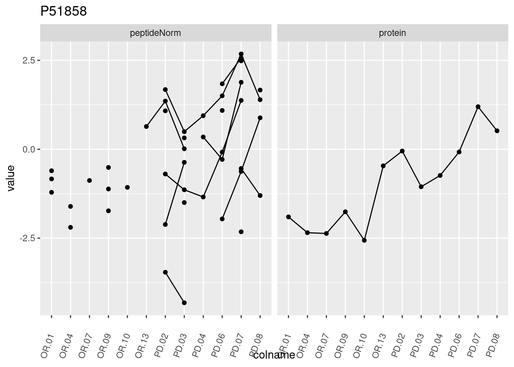
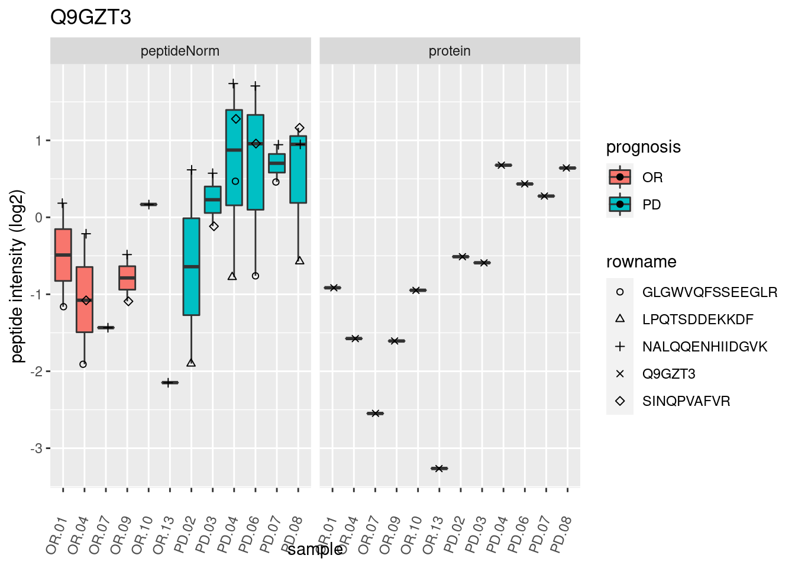
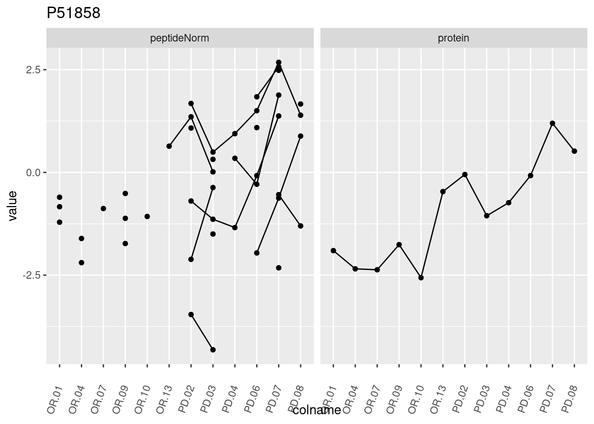
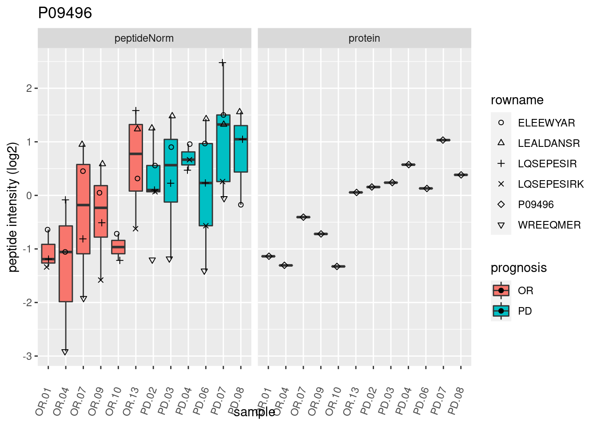
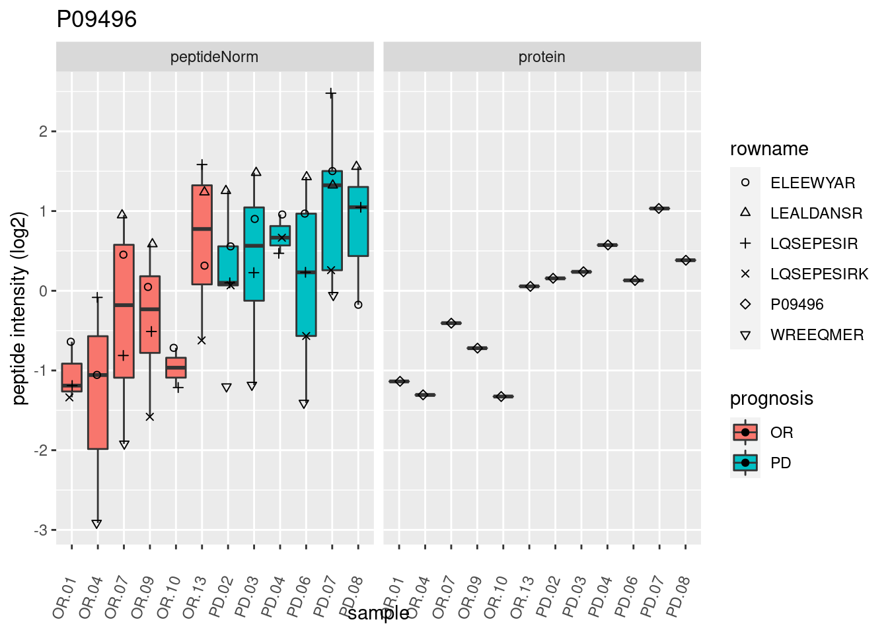

This is part of the online course Proteomics Data Analysis (PDA)
1 Background
Twelve Estrogen Receptor Positive Breast cancer tissues from from patients treated with tamoxifen upon recurrence have been assessed in a proteomics study. Six patients had a good outcome (OR) and the other Six had a poor outcome (PD). The proteomes have been assessed using an LTQ-Orbitrap and the thermo output .RAW files were searched with MaxQuant (version 1.4.1.2) against the human proteome database (FASTA version 2012-09, human canonical proteome).
2 Data
We first import the data from peptide.txt file. This is the file containing your peptide-level intensities. For a MaxQuant search [6], this peptide.txt file can be found by default in the “path_to_raw_files/combined/txt/” folder from the MaxQuant output, with “path_to_raw_files” the folder where the raw files were saved.
We generate the object peptideFile with the path to the peptide.txt
file. Using the grepEcols function, we find the columns
that contain the expression data of the peptide in the peptide.txt
file.
library(tidyverse)
library(limma)
library(QFeatures)
library(msqrob2)
library(plotly)
peptidesFile <- "https://raw.githubusercontent.com/statOmics/PDA22GTPB/data/quantification/cancer/peptides6vs6.txt"
ecols <- grep(
"Intensity\\.",
names(read.delim(peptidesFile))
)Next, we read the data and store it in QFeatures object
The QFeatures object pe currently contains a single assay, named peptideRaw.
We extract the column names from the peptideRaw assay and see that this contains information about the prognosis.
## [1] "Intensity.OR.01" "Intensity.OR.04" "Intensity.OR.07" "Intensity.OR.09"
## [5] "Intensity.OR.10" "Intensity.OR.13" "Intensity.PD.02" "Intensity.PD.03"
## [9] "Intensity.PD.04" "Intensity.PD.06" "Intensity.PD.07" "Intensity.PD.08"We rename the colnames by dropping the “Intensity.” from the name.
## [1] "OR.01" "OR.04" "OR.07" "OR.09" "OR.10" "OR.13" "PD.02" "PD.03" "PD.04"
## [10] "PD.06" "PD.07" "PD.08"pe <- renameColname(pe,
i = "peptideRaw",
newNames)
pe <- renamePrimary(pe, newNames)
colnames(pe[["peptideRaw"]])## [1] "OR.01" "OR.04" "OR.07" "OR.09" "OR.10" "OR.13" "PD.02" "PD.03" "PD.04"
## [10] "PD.06" "PD.07" "PD.08"In the following code chunk, we add the prognosis of the patients that we can read in the raw file name to the colData.
colData(pe)$prognosis <-
colnames(pe[["peptideRaw"]]) %>%
substr(start = 1, stop = 2) %>%
as.factor
colData(pe)$prognosis## [1] OR OR OR OR OR OR PD PD PD PD PD PD
## Levels: OR PDWe calculate how many non zero intensities we have per peptide and this will be useful for filtering.
Peptides with zero intensities are missing peptides and should be
represent with a NA value rather than 0.
Look at the column names of the data to know the variables that you can use for filtering.
## [1] "Sequence" "Proteins" "Leading.razor.protein"
## [4] "Gene.names" "Protein.names" "Unique..Groups."
## [7] "Unique..Proteins." "Charges" "PEP"
## [10] "Score" "Slice.Average" "Slice.Std..Dev."
## [13] "Slice.1" "Unique.Slice.Average" "Unique.Slice.Std..Dev."
## [16] "Unique.Slice.1" "Experiment.OR.01" "Experiment.OR.04"
## [19] "Experiment.OR.07" "Experiment.OR.09" "Experiment.OR.10"
## [22] "Experiment.OR.13" "Experiment.PD.02" "Experiment.PD.03"
## [25] "Experiment.PD.04" "Experiment.PD.06" "Experiment.PD.07"
## [28] "Experiment.PD.08" "Intensity" "Reverse"
## [31] "Contaminant" "id" "Protein.group.IDs"
## [34] "Mod..peptide.IDs" "Evidence.IDs" "MS.MS.IDs"
## [37] "Best.MS.MS" "Oxidation..M..site.IDs" "nNonZero"So we will filter on the “Reverse”, “Contaminant” and “nNonZero” column.
2.1 Data exploration
46% of all peptide intensities are missing and for some peptides we do not even measure a signal in any sample.
3 Preprocessing
This section preforms preprocessing for the peptide data. This include
- log transformation,
- filtering and
- summarisation of the data.
3.2 Filtering
- Handling overlapping protein groups
In our approach a peptide can map to multiple proteins, as long as there is none of these proteins present in a smaller subgroup.
pe <- filterFeatures(pe, ~ Proteins %in% smallestUniqueGroups(rowData(pe[["peptideLog"]])$Proteins))- Remove reverse sequences (decoys) and contaminants
We now remove the contaminants and peptides that map to decoy sequences.
- Drop peptides that were only identified in one sample
We keep peptides that were observed at last twice.
## [1] 25452We keep 25452 peptides upon filtering.
3.3 Normalize the data using median centering
We normalize the data by substracting the sample median from every intensity for peptide \(p\) in a sample \(i\):
\[y_{ip}^\text{norm} = y_{ip} - \hat\mu_i\]
with \(\hat\mu_i\) the median intensity over all observed peptides in sample \(i\).
3.4 Explore normalized data
Upon the normalisation the density curves are nicely registered
pe[["peptideNorm"]] %>%
assay %>%
as.data.frame() %>%
gather(sample, intensity) %>%
mutate(prognosis = colData(pe)[sample,"prognosis"]) %>%
ggplot(aes(x = intensity,group = sample,color = prognosis)) +
geom_density()## Warning: Removed 108107 rows containing non-finite values (stat_density).We can visualize our data using a Multi Dimensional Scaling plot, eg.
as provided by the limma package.
The first axis in the plot is showing the leading log fold changes (differences on the log scale) between the samples. We observe one outlying sample. In the second dimension we observe a separation according to prognosis.
3.5 Summarization to protein level
- By default robust summarization is used:
fun = MsCoreUtils::robustSummary()
## Your quantitative and row data contain missing values. Please read the
## relevant section(s) in the aggregateFeatures manual page regarding the
## effects of missing values on data aggregation.Note that the samples upon robust summarisation show a separation according to the prognosis.
4 Data Analysis
4.1 Estimation
We model the protein level expression values using
msqrob. By default msqrob2 estimates the model
parameters using robust regression.
We will model the data with a different group mean. The group is
incoded in the variable prognosis of the colData. We can
specify this model by using a formula with the factor condition as its
predictor: formula = ~prognosis.
Note, that a formula always starts with a symbol ‘~’.
4.2 Inference
First, we extract the parameter names of the model by looking at the first model. The models are stored in the row data of the assay under the default name msqrobModels.
## (Intercept) prognosisPD
## -1.1067176 0.5721013We can also explore the design of the model that we specified using
the the package ExploreModelMatrix
## [[1]]
Spike-in condition A is the reference class. So the mean
log2 expression for samples from good prognosis (OR) is ‘(Intercept).
The mean log2 expression for samples from poor prognosis (PD)
is’(Intercept)+prognosisPD’. Hence, the average log2 fold change between
prognosis PD and prognosis OR is modelled using the parameter
‘conditionPD’. Thus, we assess the contrast ‘conditionPD = 0’ with our
statistical test.
4.3 Plots
4.3.1 Volcano-plot
volcano <- ggplot(rowData(pe[["protein"]])$prognosisPD,
aes(x = logFC, y = -log10(pval), color = adjPval < 0.05)) +
geom_point(cex = 2.5) +
scale_color_manual(values = alpha(c("black", "red"), 0.5)) + theme_minimal()
volcanoNote, that 36 proteins are found to be differentially abundant.
4.3.2 Heatmap
Note, that we also order the sigNames according to statistical significance.
4.3.3 Detail plots
We make detail plots for the top 10 proteins to restrict the number of detail plots.
for (protName in sigNames)
#for (protName in orderProt[1:10])
{
pePlot <- pe[protName, , c("peptideNorm","protein")]
pePlotDf <- data.frame(longFormat(pePlot))
pePlotDf$assay <- factor(pePlotDf$assay,
levels = c("peptideNorm", "protein"))
pePlotDf$prognosis <- as.factor(colData(pePlot)[pePlotDf$colname, "prognosis"])
# plotting
p1 <- ggplot(data = pePlotDf,
aes(x = colname, y = value, group = rowname)) +
geom_line() +
geom_point() +
theme(axis.text.x = element_text(angle = 70, hjust = 1, vjust = 0.5)) +
facet_grid(~assay) +
ggtitle(protName)
print(p1)
# plotting 2
p2 <- ggplot(pePlotDf, aes(x = colname, y = value, fill = prognosis)) +
geom_boxplot(outlier.shape = NA) +
geom_point(
position = position_jitter(width = .1),
aes(shape = rowname)) +
scale_shape_manual(values = 1:nrow(pePlotDf)) +
labs(title = protName, x = "sample", y = "peptide intensity (log2)") +
theme(axis.text.x = element_text(angle = 70, hjust = 1, vjust = 0.5)) +
facet_grid(~assay)
print(p2)
} 
 
 

5 Session Info
With respect to reproducibility, it is highly recommended to include a session info in your script so that readers of your output can see your particular setup of R.
## R version 4.2.3 (2023-03-15)
## Platform: x86_64-pc-linux-gnu (64-bit)
## Running under: Ubuntu 22.04.4 LTS
##
## Matrix products: default
## BLAS: /usr/lib/x86_64-linux-gnu/openblas-pthread/libblas.so.3
## LAPACK: /usr/lib/x86_64-linux-gnu/openblas-pthread/libopenblasp-r0.3.20.so
##
## locale:
## [1] LC_CTYPE=C.UTF-8 LC_NUMERIC=C LC_TIME=C.UTF-8
## [4] LC_COLLATE=C.UTF-8 LC_MONETARY=C.UTF-8 LC_MESSAGES=C.UTF-8
## [7] LC_PAPER=C.UTF-8 LC_NAME=C LC_ADDRESS=C
## [10] LC_TELEPHONE=C LC_MEASUREMENT=C.UTF-8 LC_IDENTIFICATION=C
##
## attached base packages:
## [1] stats4 stats graphics grDevices datasets utils methods
## [8] base
##
## other attached packages:
## [1] ExploreModelMatrix_1.8.0 plotly_4.10.0
## [3] msqrob2_1.4.0 QFeatures_1.6.0
## [5] MultiAssayExperiment_1.22.0 SummarizedExperiment_1.26.1
## [7] Biobase_2.56.0 GenomicRanges_1.48.0
## [9] GenomeInfoDb_1.32.2 IRanges_2.30.0
## [11] S4Vectors_0.34.0 BiocGenerics_0.42.0
## [13] MatrixGenerics_1.8.0 matrixStats_0.62.0
## [15] limma_3.52.1 forcats_0.5.1
## [17] stringr_1.4.1 dplyr_1.0.9
## [19] purrr_0.3.4 readr_2.1.2
## [21] tidyr_1.2.0 tibble_3.1.7
## [23] ggplot2_3.3.6 tidyverse_1.3.2
##
## loaded via a namespace (and not attached):
## [1] googledrive_2.0.0 minqa_1.2.4 colorspace_2.0-3
## [4] ellipsis_0.3.2 XVector_0.36.0 fs_1.5.2
## [7] clue_0.3-61 farver_2.1.0 DT_0.23
## [10] fansi_1.0.3 lubridate_1.8.0 xml2_1.3.3
## [13] codetools_0.2-18 splines_4.2.3 knitr_1.40.1
## [16] jsonlite_1.8.0 nloptr_2.0.3 broom_0.8.0
## [19] cluster_2.1.3 dbplyr_2.1.1 shinydashboard_0.7.2
## [22] shiny_1.7.1 BiocManager_1.30.18 compiler_4.2.3
## [25] httr_1.4.3 backports_1.4.1 assertthat_0.2.1
## [28] Matrix_1.4-1 fastmap_1.1.0 lazyeval_0.2.2
## [31] gargle_1.2.0 cli_3.3.0 later_1.3.0
## [34] htmltools_0.5.2 tools_4.2.3 igraph_1.3.2
## [37] gtable_0.3.0 glue_1.6.2 GenomeInfoDbData_1.2.8
## [40] Rcpp_1.0.8.3 cellranger_1.1.0 jquerylib_0.1.4
## [43] vctrs_0.4.1 nlme_3.1-157 rintrojs_0.3.0
## [46] xfun_0.33 lme4_1.1-29 rvest_1.0.2
## [49] mime_0.12 lifecycle_1.0.1 renv_0.15.4
## [52] googlesheets4_1.0.0 zlibbioc_1.42.0 MASS_7.3-57
## [55] scales_1.2.0 promises_1.2.0.1 hms_1.1.1
## [58] ProtGenerics_1.28.0 parallel_4.2.3 AnnotationFilter_1.20.0
## [61] yaml_2.3.5 sass_0.4.1 stringi_1.7.8
## [64] highr_0.9 boot_1.3-28 BiocParallel_1.30.2
## [67] rlang_1.0.2 pkgconfig_2.0.3 bitops_1.0-7
## [70] evaluate_0.16 lattice_0.20-45 htmlwidgets_1.5.4
## [73] labeling_0.4.2 cowplot_1.1.1 tidyselect_1.1.2
## [76] magrittr_2.0.3 R6_2.5.1 generics_0.1.2
## [79] DelayedArray_0.22.0 DBI_1.1.2 pillar_1.7.0
## [82] haven_2.5.0 withr_2.5.0 MsCoreUtils_1.8.0
## [85] RCurl_1.98-1.6 modelr_0.1.8 crayon_1.5.1
## [88] utf8_1.2.2 tzdb_0.3.0 rmarkdown_2.14
## [91] grid_4.2.3 readxl_1.4.0 data.table_1.14.2
## [94] reprex_2.0.1 digest_0.6.29 xtable_1.8-4
## [97] httpuv_1.6.5 munsell_0.5.0 viridisLite_0.4.0
## [100] bslib_0.3.1 shinyjs_2.1.0